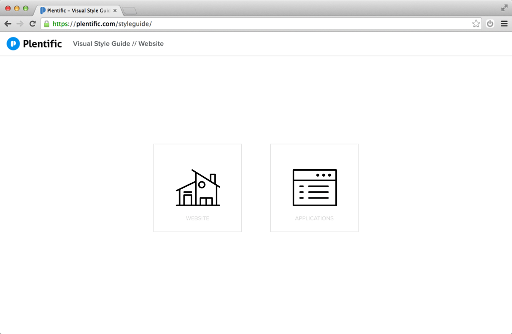
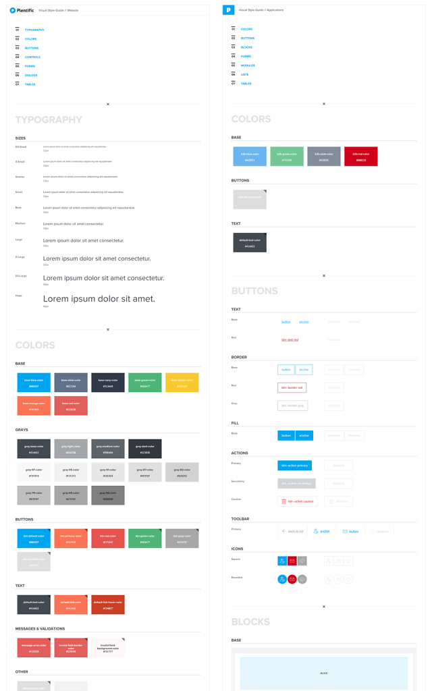
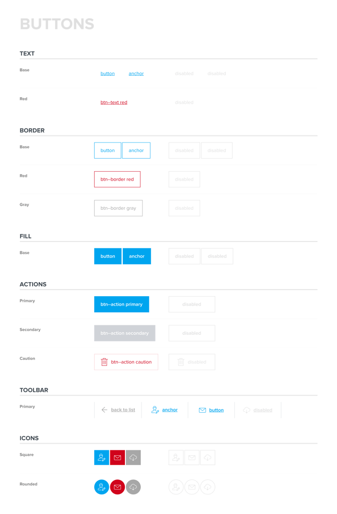
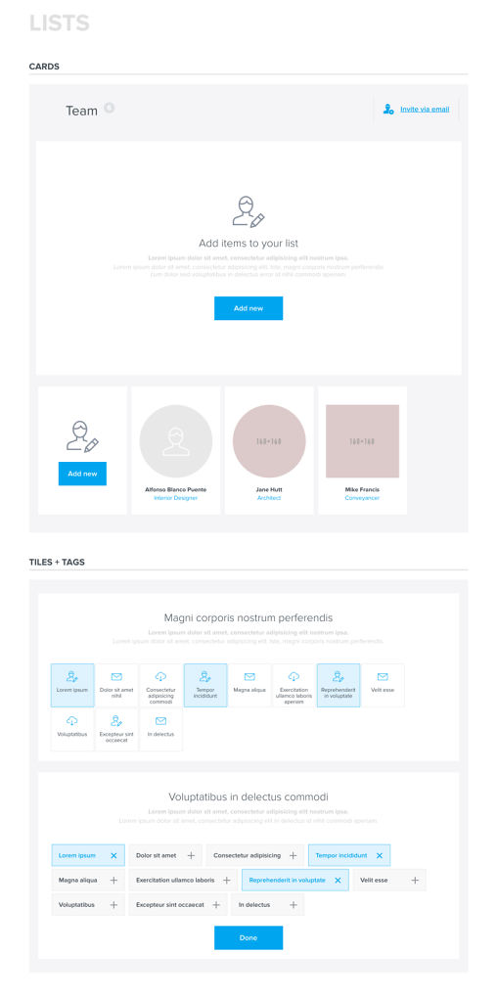
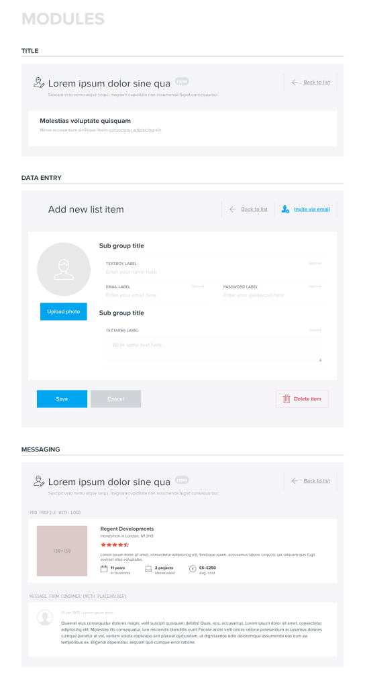
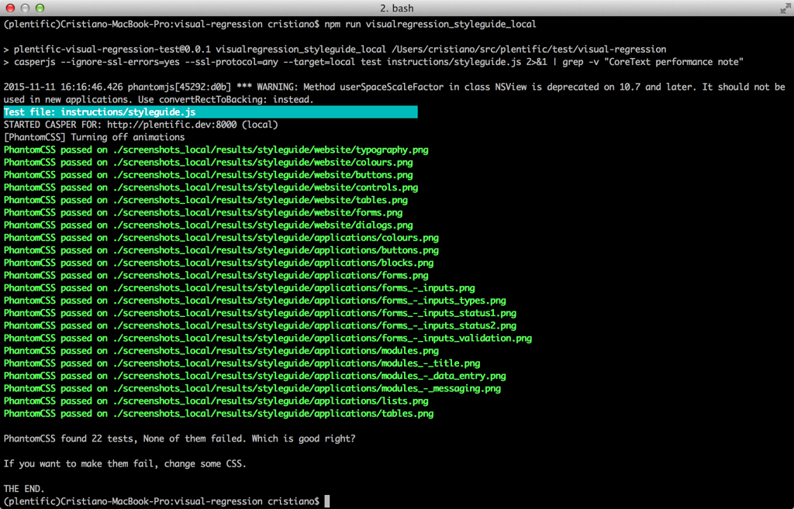
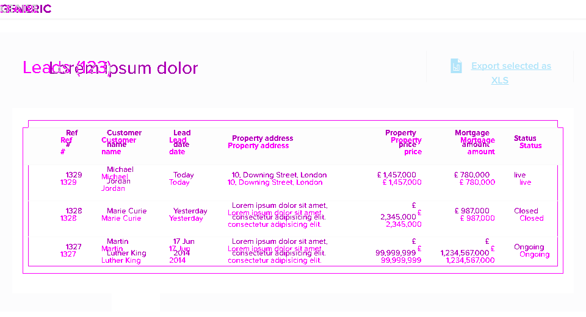

Plentific - Styleguide
I have developed a styleguide - or better, a component library - to collect all the UI elements and components used in the Plentific website and web applications. The styleguide is a reference library shared between developers and designers, built to increase consistency and reduce the proliferation of variants of similar components. It’s also useful to run visual regression test against it. Link: plentific.com/styleguide
-
Styleguides for the website and the applications
The index page of the styleguides I have built, one for the public website and one for the password-protected web applications.
 -
Styleguides for the website and the applications
An overview of the two styleguides (notice: the image is cut, because the entire pages could not fit in).
 -
Styleguide for the applications - Buttons
 -
Styleguide for the applications - Forms

-
Styleguide for the website - Colors

-
Styleguide for the applications - Lists
 -
Styleguide for the applications - Modules
 -
Visual Regression tests
I have implemented an entire suite of Visual Regression tests – based on PantomCSS, CasperJS, PhantomJS and Gulp – that covers the website, the web-apps and especially the styleguide (above: the test for the styleguide pages).
 -
Visual Regression tests
An example of a failed test, due to a wrong padding of the containing box module.
